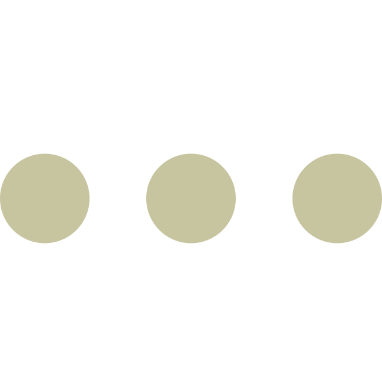

enter expression
Plotting...
Welcome to the reference for Koval's 3D Grapher! Here you can find help on everything involving usage of this application, from how to navigate the interface to fine tuning the plot to troubleshooting. Select a topic from the left side of this window to get started.
This is a short guide to plotting a simple function, \(z=\sin{x}+\sin{y}\).
This section outlines how to view different sections of the plot by changing the domain of the input variables.
This section gives a basic overview of the three types of supported coordinate systems (cartesian, cylindrical and spherical) and how to use them in Koval's 3D Grapher.
This section defines the usage of parametricly defined plots using the extra variables /(u/) and /(v/).
This section outlines all the acceptable equation forms that may be entered into Koval's 3D Grapher, such as \(y = 4x + z\) and \([r,\theta,\phi]=[u,v,\sin{u}]\).
This section provides background about the rendering of the 3D plotted surface and how the "invert normals" button illuminates the opposite side of the surface.
This section adresses some common misunderstandings and pitfalls when using Koval's 3D Grapher.
This section enumerates a list of operators and functions and their definitions that may be used in expressions.
| Function Name | Meaning | Need Backslash? |
|---|---|---|
| \(\text{abs}(x)\) | Absolute Value | Yes |
| \(\text{acos}(x)\) | Arccosine (or inverse cosine) | Yes |
| \(\text{acosh}(x)\) | Inverse hyperbolic cosine function | Yes |
| \(\text{acot}(x)\) | Inverse cotangent function | Yes |
| \(\text{acoth}(x)\) | Inverse hyperbolic cotangent function | Yes |
| \(\text{acsc}(x)\) | Inverse cosecant function | Yes |
| \(\text{acsch}(x)\) | Inverse hyperbolic cosecant function | Yes |
| \(\text{add}(x,y)\) | Adds two numbers or matrices together. I have no idea when you would ever use this because it is identical to \(+\) | Yes |
| \(\text{asec}(x)\) | Inverse secant function | Yes |
| \(\text{asech}(x)\) | Inverse hyperbolic secant function | Yes |
| \(\text{asin}(x)\) | Inverse sine function | Yes |
| \(\text{asinh}(x)\) | Inverse hyperbolic sine function | Yes |
| \(\text{atan}(x)\) | Inverse tangent function | Yes |
| \(\text{atan2}(y,x)\) | Inverse tangent function, extends \(\text{atan}(x)\) function to account for all angles. | Yes |
| \(\text{atanh}(x)\) | Inverse hyperbolic tangent function | Yes |
| \(\text{bellNumbers}(n)\) | Returns the \(n^{\text{th}}\) Bell Number. This function only accepts positive integers. | Yes |
| \(\text{bitAnd}(x,y)\) | Bitwise AND function. | Yes |
| \(\text{bitNot}(x,y)\) | Bitwise NOT function. | Yes |
| \(\text{bitOr}(x,y)\) | Bitwise OR function. | Yes |
| \(\text{bitXor}(x,y)\) | Bitwise XOR function. | Yes |
| \(\text{catalan}(n)\) | Returns the \(n^{\text{th}}\) Catalan Number. This function only accepts positive integers. | Yes |
| \(\text{cbrt}(x)\) | Cube root function. Equivalent to raising to the \(1/3\) power. | Yes |
| \(\text{ceil}(x)\) | Ceiling function. Returns the smallest integer greater than \(x\) | Yes |
| \(\text{combinations}(n,k)\) | Number of combinations of picking \(k\) items from \(n\) items. Note that \(k\leq n\) and both \(k\) and \(n\) are positive integers. | Yes |
| \(\text{complex}(r, im)\) | creates a complex number from a real and imaginary part. | Yes |
| \(\text{composition}(n,k)\) | The number of ways to represent \(n\) as the sum of \(k\) numbers. | Yes |
| \(\text{concat}(x,y,z...)\) | Concatenates two or more matrices together. | Yes |
| \(\text{conj}(x)\) | Returns the conjugate of a complex number. | Yes |
| \(\text{cos}(x)\) | Cosine function | No |
| \(\text{cosh}(x)\) | Hyperbolic cosine function | No |
| \(\text{cot}(x)\) | Cotangent function | No |
| \(\text{coth}(x)\) | Hyperbolic cotangent function | No |
| \(\text{cross}(x,y)\) | Returns the cross product of two vectors. | Yes |
| \(\text{csc}(x)\) | Cosecant function | No |
| \(\text{csch}(x)\) | Hyperbolic cosecant function. | No |
| \(\text{det}(x)\) | Calculates the determinant of a matrix. The matrix must be square. | No |
| \(\text{distance}(x,y)\) | Calculates the Euclidian distance between two points. The points may be two or three dimensional. | Yes |
| \(\text{dot}(x)\) | Calculates the dot product of two vectors. | Yes |
| \(\text{dotDivide}(x,y)\) | Calculates the element-wise division of two matrices. | Yes |
| \(\text{dotMultiply}(x,y)\) | Calculates the element-wise multiplication of two matrices. | Yes |
| \(\text{dotPow}(x,y)\) | Calculates the element-wise power (\(x^y\)) of two matrices. | Yes |
| \(\text{exp}(x)\) | Calculates \(e^x\). | No |
| \(\text{factorial}(x)\) | Calculates the factorial of a number. This is the same as the \(!\) operator. \(x\) must be positive | Yes |
| \(\text{fix}(x)\) | Rounds \(x\) toward zero. | Yes |
| \(\text{floor}(x)\) | Rounds \(x\) toward negative infinity. | Yes |
| \(\text{gamma}(x)\) | The Gamma function. An extension of the factorial function. | Yes |
| \(\text{gcd}(x,y)\) | Computes the greatest common divisor among \(x\) and \(y\) | No |
| \(\text{hypot}(x,y,...)\) | Calculates the hypotenuse of the values. This is equal to \(\sqrt{x^2+y^2...}\) | Yes |
| \(\text{im}(x)\) | Returns the imaginary portion of \(x\). | Yes |
| \(\text{inv}(x)\) | Calculates the inverse of a matrix. The matrix must be square. | Yes |
| \(\text{kldivergence}(x,y)\) | Computes the Kullback-Leibler divergence between two distributions | Yes |
| \(\text{lcm}(x)\) | Calculates the least common multiple of two numbers. | No |
| \(\text{leftShift}(x, y)\) | Bitwise shifts \(x\) left by \(y\) bits. For all you programmers it is equal to \(x << y\) | Yes |
| \(\text{log}(x, y)\) | Calculates \(\log_y{x}\). If \(y\) is ommitted, then it defaults to \(\log_{e}{x}\). | No |
| \(\text{max}(x, y, ...)\) | Calculates the maximum value out of the inputs. | No |
| \(\text{mean}(x, y,...)\) | Calculates the mean of the inputs. | Yes |
| \(\text{median}(x, y,...)\) | Calculates the mediam of the inputs. | Yes |
| \(\text{min}(x, y, ...)\) | Calculates the minimum value out of the inputs. | No |
| \(\text{mod}(x, y)\) | Calculates \(x\,\%\,y\) (for programmers), also known as the modulus. | Yes |
| \(\text{mode}(x, y, ...)\) | Calculates the most common value among the inputs. | Yes |
| \(\text{nthRoot}(x, n)\) | Calculates the \(n^{\text{th}}\) root of \(x\). \(n\) defaults to two if not provided. | Yes |
| \(\text{pickRandom}(x)\) | Picks a random element from the 1-dimensional array \(x\) | Yes |
| \(\text{random}(x,y)\) | Picks a random number between \(x\) and \(y\) (inclusive only on minimum). It defaults to zero if \(x\) is not provided, and \([0,1]\) if neither \(x\) nor \(y\) is provided. | Yes |
| \(\text{randomInt}(x,y)\) | Picks a random integer between \(x\) and \(y\) (inclusive only on minimum). It defaults to zero if \(x\) is not provided. | Yes |
| \(\text{re}(x)\) | Returns the real part of the complex number \(x\) | Yes |
| \(\text{rightArithShift}(x, y)\) | Bitwise shifts \(x\) right arithmetically by \(y\) bits. For all you programmers it is equal to \(x >> y\) | Yes |
| \(\text{rightLogShift}(x, y)\) | Bitwise shifts \(x\) right logically by \(y\) bits. It is equal to \(x >>> y\) | Yes |
| \(\text{sec}(x)\) | Calculates the secant of \(x\). | No |
| \(\text{sech}(x)\) | Calculates the hyperbolic secant of \(x\). | No |
| \(\text{sign}(x)\) | Calculates the sign of \(x\). This is \(-1\) when \(x<1\), \(1\) when \(x>1\) and \(0\) when \(x=0\). | Yes |
| \(\text{sin}(x)\) | Calculates the sine of \(x\) | No |
| \(\text{sinh}(x)\) | Calculates the hyperbolic sine of \(x\) | No |
| \(\text{sqrt}(x)\) | Calculates the square root of \(x\) | No |
| \(\text{std}(x,y,...)\) | Calculates the standard deviation of the inputs. | Yes |
| \(\text{stirlingS2}(x,y)\) | Calculates the stirling number of the second kind | Yes |
| \(\text{tan}(x)\) | Calculates tangent of \(x\). | No |
| \(\text{tanh}(x)\) | Calculates hyperbolic tangent of \(x\). | No |
| \(\text{trace}(x)\) | Calculates trace of matrix \(x\), the sum of the elements on the main diagonal. \(x\) must be square. | Yes |
| \(\text{transpose}(x)\) | Reflects each element of the square matrix \(x\) over its main diagonal. | Yes |
Don't see the function you'd like? Check out the full list of functions from mathjs.org, at your own risk, of course.
This sections illuminates some of the algorithms that drive the mesh generation and graphing mechanism of Koval's 3D Grapher.
My name is Alan Koval, a freshmen at the University of Minnesota. I am currently studying mathematics and computer science. You can find more about me on my website homepage, alankoval.com